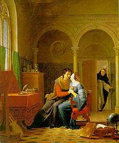
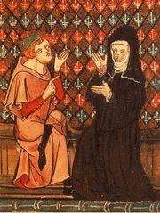

Héloïse et Abélard
Héloïse and Abélard
Dialecte de Cornouaille
|
Selon Donatien Laurent c'est la soeur ainée (née en 1804) de Pierre Michelet, le chanteur des Séries et la belle-soeur de Marguerite Le Naour, née Guéguen, qui chanta "La Croix du chemin" . Cependant l'"Argument" de 1845, affirmait: "Peu de pièces sont plus populaires. J'en ai recueilli plus de 20 versions", précision supprimée en 1867. - par de Penguern: t. 90, p. 179 & 221: "Ar sorcerez", (Taulé, 1850 et Henvic,1851); - par Mme de Saint-Prix: t. 93 de la collection Penguern, p. 101: "Son Janedic"; - par Luzel: "Gwerzioù I": "Janedik ar zorcerez" (Plouaret, 1869 - 1849 frag.); - par Milin: revue "Gwerin" 1: "Gwechall pa oan bihanik, (Brest 1856); - par Mauriès: "Bulletin archéologique de l'association bretonne", 1868: "Konfesion an abadez Loiza", (Vannes 1858); - par Y. Le Goff: "Annales de Bretagne" XLV, 1938: "Merc'h ar baron", (Pleyben); - par Pérennès: "Annales de Bretagne" XLV, 1938: "An eriaten" (Peumerit, frag.). "Ar plac'h giriek" (frag.). |
 |
In Donatien Laurent's view is an elder (born 1804) sister of Pierre Michelet, who sang the Series and the sister-in-law of Marguerite Le Naour, née Guéguen, who sang "The cross by the wayside" . However the "Argument" in the 1845 edition, stated: "Few pièces are less popular. I collected more than 20 versions of it". These last words were removed in 1867. - by de Penguern: book. 90, p. 179 & 221: "Ar sorcerez", (Taulé, 1850 and Henvic,1851); - by Mme de Saint-Prix: book. 93 of the Penguern collection, p. 101: "Son Janedic"; - by Luzel: "Gwerzioù I": "Janedik ar zorcerez" (Plouaret, 1869 - 1849 frag.); - by Milin: periodical "Gwerin" 1: "Gwechall pa oan bihanik, (Brest 1856); - by Mauriès: "Bulletin archéologique de l'association bretonne", 1868: "Konfesion an abadez Loiza", (Vannes 1858); - by Y. Le Goff: "Annales de Bretagne" XLV, 1938: "Merc'h ar baron", (Pleyben); - by Pérennès: "Annales de Bretagne" XLV, 1938: "An eriaten" (Peumerit, frag.). "Ar plac'h giriek" (frag.). |
Ton
Sol majeur, Rythme: 3/4 et 2/4 alternés, Fond sonore de cette page
Arrangt MIDI de Chr.ouchon, d'après celui de Fr. Silcher, 1841
| Français | English |
|---|---|
|
Je n'avais que douze ans, (bis) Quand je suivis mon clerc, La la lan la la ri la Quand je suivis mon clerc, Abélard, mon amant. 2. Et voilà que j'arrive à Nantes, Avec mon clerc si bon, Ne sachant d'autre langue, Mon Dieu, que le breton. 3. Je ne savais, mon Dieu, que dire Pater et oraisons, Quand j'étais chez mon père, Fillette, à la maison... 4. Maintenant que je suis instruite Fort instruite en tout point, Je sais lire et écrire Le français, le latin. 5. Je sais lire les Evangiles Bien écrire et prêcher Et consacrer l'hostie Comme un prêtre ferait. 6. J'empêche le prêtre de dire Ses messes. Et je noue L'aiguillette par le Milieu et les deux bouts. 7. Je sais comment trouver l'or jaune Dans la cendre aussi bien Que l'argent dans le sable Quand j'en ai le moyen. 8. Et je me change en chienne noire, En corbeau si je veux, Ou même en feu follet Ou en un dragon affreux. 9. Je connais une cantilène Qui fait fendre les cieux, Tressaillir l'océan Et le sol, si je veux. 10. Je sais tout ce qui dans ce monde Mérite d'être su. Et tout ce qui sera Tout ce qui jadis fut. 11. J'ai mêlé dans mon premier philtre, L'oeil gauche d'un corbeau - Mon doux clerc m'y aida- Et le coeur d'un crapaud, 12. Le grain des fougères qui poussent Cent pas au fond des puits, Et le pied d'herbe d'or Trouvé dans la prairie, 13. Qu'on doit arracher tête nue, A l'aube et d'un seul coup, Vêtue d'une chemise Et les pieds nus, c'est tout. 14. Le premier emploi de mon philtre Fait en guise d'essai Ce fut dans le champ de Seigle du Père Abbé. 15. Sur les dix-huit brassées de seigle Qu'avait semées l'abbé, Il ne put recueillir De grain que deux poignées. 16. J'ai dans la maison de mon père Un beau coffret d'argent. Quiconque l'ouvrirait Serait bien négligent! 17. Car dedans, il y a trois vipères Couvant l'oeuf d'un dragon Si le dragon éclot, Quelle désolation! 18. Si le dragon vient à éclore Qu'on maudisse ce jour: Il jettera des flammes A sept lieues alentour. 19. Ce n'est point la chair de bécasse, Ni la chair de perdrix, Mais le sang sacré d'in -nocents qui les nourrit. 20. Le premier, c'est au cimetière Qu'il fut par moi occis Le jour de son baptême; Près du prêtre en surplis. 21. Lorsqu'au carrefour on l'emporte J'enlève mes souliers Et, sans bruit, sur mes bas, M'en vais le déterrer. 22. Et si je reste en ce bas monde Ma Lumière avec moi, Si nous restons sur terre Encor deux ans ou trois, 23. Encore un ou deux ou trois ans, Moi et mon doux amour, Nous allons faire tour- -ner ce monde à rebours! 24. - Prenez bien garde, Loïza, A votre âme! Il vaut mieux: Si ce monde est à vous, L'autre appartient à Dieu! - Trad. Christian Souchon (c) 2008 |
When I fled from my father's house, (2 times) To follow my dear clerk, La la lan la la ri la To follow my dear clerk, And to be Abelard's spouse. 2. But then, when I came to Nantes town, And my darling clerk followed on, I knew no language, but My old Breton mother tongue; 3. And I knew of Latin nothing But the prayers that were said, -Was but a little girl - With my father when I stayed. 4. Now that I am a learned woman, There are lots of things I can do: I can read, I can write.. I know French and Latin too. 5. I can read and explain the Gospel. I speak so fine that I can preach. I consecrate the host Just as would do any priest. 6. And prevent priests from saying mass; Just as I can prevent marriage To be consummated, In using magic bondage. 7. I know how to find yellow gold, Yellow gold amidst ember glow And silver in the sand: That's the sort of things I know. 8. I may change into a black dog Or a raven if I prefer. A will -o'- the- wisp or A dragon: it may occur. 9. And I know a song apt to cause Blue skies with lightning to be rent, The great ocean to stir, To shudder and quake the land. 10. And I know anything worth knowing For lesser beings here below: In future what will be And what has been long ago. 11. To prepare my first herbal tea My dear clerk his great help bestowed: A raven's left eye mixed Up with the heart of a toad. 12. And I picked berries of green fern Hundred feet down in deepest hollows And used the Gold Herb s root I ripped off in meadows. 13. That I ripped early at daybreak Suddenly, and I was bare-headed, I wore but a night-dress, And I was bare-footed. 14. The first use I made of my drugs, To test the craft at my command, Was in a field of rye On one of the Abbot's lands. 15. From the eighteen armfuls of rye That the Abbot's monks had sown They harvested only Two handfuls of rye corn. 16. I've a silver casket at home Hidden from everybody's view: Whoever opened it Would have bitter cause to rue. 17. There are three adders shut in it, On a dragon's egg they brood. When this egg hatches out, Of it will come nothing good. 18. O yes, if my dragon hatches, The damage caused will be dire For seven miles around It will spit flames and fire! 19. It is not on the flesh of partridge, Not on the flesh of woodcock, On hallowed sinless blood That I feed my dragon stock. 20. The first innocent that I killed 0n the churchyard premises Was going to be baptized By a priest in surplice. 21. He was buried by the crossroads. I have taken off my shoes. I went and dug him up In my socks, that was my ruse. 22. Shall I stay long enough on earth And my beloved Enlightener, too, Shall we remain here yet, Be it for a year or two, 23. For one, two or three years only My darling clerk and me We'll be able to make This world turn the other way. 24. - Take great care, O Young Loiza, Your soul fights against great odd: You may call this world your own. The other belongs to God! Transl. Christian Souchon (c) 2008 |
Vers les textes bretons
To the Breton texts

|
Quelques remarques sur ce chant
Dans ce morceau, il est question d'une sorcière malfaisante dans laquelle La Villemarqué nous invite à reconnaître l'élève et l'épouse d'Abélard. - Strophe 5: seules les abbesses pouvaient entrer dans le chœur et lire l'Evangile. De fait, Héloïse devint abbesse de l'Oratoire du Paraclet, près de Nogent-sur-Seine, fondé en 1121 par Abélard. Le chant la présente comme une sorcière et une prêtresse qui consacre l'hostie. - Strophe 6: l'expression bretonne "skoulmañ an akuilhetenn e kreizh hag en daoubenn" traduit le latin "ligare phallum in medio et per fines". Les aiguillettes étaient des lacets à bouts ferrés utilisés pour assujettir les chausses au pourpoint. - Strophe 8: feu-follet se dit en breton "paotrig ar skod-tan" (=l'enfant au tison) et est similaire à l'expression anglaise "wisp o' the will" : torche de paille (wisp) du (lutin) Will(iam), et au français si l'on entend par "follet" un lutin facétieux. - Strophes 12 et 13: il s'agit de la fameuse "herbe d'or" dont il est question dans "Merlin devin" - strophe 4 et dans "Le tribut de Noménoé" - strophe 1, ainsi que , sur le mode de la facétie, dans "La tournée des étrennes" - strophes 47/48. (Cf. aussi le tableau "Herboristerie bretonne" ). Bien que l'authenticité de ces 3 références soit douteuse (voire exclue, pour la "Tournée"), ce détail n'est pas sorti de l'imagination de La Villemarqué . Cette herbe magique qu'on ne doit pas couper avec un outil métallique sous peine de provoquer, pour le moins, une violente averse apparaît, pour le présent chant, à la page 185 du 1er manuscrit de Keransquer, dans le titre que lui donne le chanteur, puis au vers 12-2, sous les formes "Dour iaten" et "Ann naour iaten" , visiblement ignorées et non comprises du jeune collecteur. Il les rectifiera en "ann aour-ieotenn" dans l'Héloïse du Barzhaz. "Geotenn" est le singulatif de "geot", "herbes" et "aour" le nom breton de l'"or". Les composés tels que celui-ci, dans lesquels le complément précède le mot complété, sont rares et sont généralement la marque d'une grande ancienneté. L'authenticité de cette traditon est confirmée par le chant Le cygne , d'autant que l'allusion qui y est faite, à la strophe 20 retranscrite telle quelle à partir du texte original intitulé "Gwai gwenn alar" dans le carnet 2 à la page 155-84, n'a pas été remarquée par La Villemarqué qui a omis de traduire les mots qui l'expriment: "a-benn ur gaouad" (="après une averse"). On retrouve l'herbe d'or dans un chant recueilli auprès de Jean Lesouarn, 72 ans, de Plogastel-Saint-Germain, par le Chanoine Henri Pérennès: "gant grugoù an (eriaten) aour-yeotenn da Nedeleg dastumet" (avec des morceaux d'herbe d'or récoltée à Noël). Quant à la graine de fougère, la difficulté de s'en procurer est évoquée dans une variante, "Ar plac'h gouiziek" (La femme savante), chantée à H. Pérennès par Mme Leroux:
Le chanoine, qui semble très au fait des questions de sorcellerie, explique, dans une note, qu'en effet les spores de fougère se confondent avec le sol ("Chansons populaires de la Basse Bretagne", in "Annales de Bretagne", T. 45 1-2, p.221, 1938). La publication du second carnet de Keransquer en novembre 2018 révèle que La Villemarqué a collecté vers 1841 une variante trégorroise de ce chant qui précise que les graines de fougère doivent être ramassées la nuit de la Saint-Jean d'été. Elle évoque quelques autres ingrédients magiques: l'oeil de corbeau (le gauche), le coeur de crapaud et la vipère qui couve un dragon pyromane. Le juge qui vient de condamner la sorcière et l'interroge sur ses procédés et les moyens de s'en prémunir la nomme "Janedig" , Jeannette. Cependant La Villemarqué intitule ces 7 distiques "Variantes d'Héloïse". Ces notes n'étant pas destinées à être publiées, ce détail atteste qu'il était sincèrement persuadé que la savante maîtresse d'Abélard était la véritable héroïne de la gwerz de la sorcière. - Strophe 19: cette strophe rappelle "Sire Nann et la fée" - verse 4. - Strophe 24: cette strophe est le pendant de a strophe 9 de "Merlin devin" . La véritable Héloïse La véritable Héloïse (1101 - 1162) n'était ni bretonne, ni sorcière. Si on la connaît habituellement pour sa liaison avec Pierre Abélard (1078 - 1142), les philosophes voient en elle avant tout une brillante érudite qui savait le latin, le grec et l'hébreu, réputée pour son esprit et son savoir. On peut déduire de sa correspondance qu'elle était d'origine plus modeste qu'Abélard, lequel était issu d'une famille noble. Elle était la pupille de son oncle, Fulbert, Chanoine de Notre Dame de Paris, l'église précédant l'actuelle cathédrale, et à l'âge de 13 ans, elle devint l'élève du fameux théologien et philosophe scolastique Abélard, alors âgé de 35ans. Ils eurent une relation "coupable" de laquelle naquit un fils qu'ils nommèrent "Astrolabe" (d'après l'instrument scientifique nouvellement importé du monde islamique). Après que, cédant aux instances de Fulbert, elle eut consenti à se marier, Héloïse fut placée par son époux dans un couvent à Argenteuil, près de Paris. Aussitôt Fulbert, voyant là une manœuvre destinée à se débarrasser d'elle, décida de se venger et ordonna la fameuse castration. Abélard se fit moine et Héloïse prit le voile pour devenir rapidement la prieure du couvent d'Argenteuil. Plus tard, elle entra à l'Oratoire du Paraclet, près de Nogent sur Seine, une abbaye créée par Abélard, dont elle devint l'abbesse. Une correspondance s'établit entre les anciens amants. Abélard écrivit dans son "Historia calamitatum" l'histoire de ses malheurs en tant que philosophe et en tant que moine, et Héloïse lui faisait part dans ses lettres de la compassion que lui inspirait ces vicissitudes. Un échange de lettres tour à tour passionnées et érudites. Héloïse rédigea également les "Problemata Heloisae", un recueil de 42 questions de théologie adressées à son ancien mari, alors qu'elle était déjà abbesse au Paraclet, avec les réponses. Il y a au cimetière du Père-Lachaise à Paris un monument du 19ème siècle d'une rare laideur dont la crypte est censée abriter les restes mortels des deux amants. (Source: Wikipedia article sur Abélard and Héloïse) Abélard et la Bretagne A la différence d'Héloïse, Abélard est assez clairement lié à la Bretagne. Il est né au bourg du Pallet, à 20 Km à l'est de Nantes. S'il parcourut la France en tous sens (Melun, Corbeil, Paris, Saint-Denis, Nogent-sur-Seine), il passa presque dix ans à l' Abbaye de Saint-Gildas-de-Ruys , sur la côte morbihannaise au sud de Vannes, dans une région hostile, à la tête d'un établissement où régnait le plus grand désordre. Puis il s'enfuit pour revenir à Paris vers 1136. Il passa la dernière partie de sa vie à se débattre face à une grande épreuve: la condamnation de ses thèses par Saint Bernard de Clairvaux qui avait convoqué à cet effet un concile à Sens en 1141. Il mourut au prieuré de Saint-Marcel, près de Chalon-sur-Saône, alors qu'il se rendait à Rome où il voulait plaider lui-même en appel d'une seconde condamnation. Les multiples talents d'Abélard En tant que logicien, moraliste et théologien, Abélard donna une expression formelle rationnelle à la doctrine ecclésiastique reçue (dialectique). Il développa la réflexion en termes d'idées générales, appelées "universaux" (conceptualisme). En éthique, il insistait particulièrement sur l'intention subjective qui détermine la valeur morale de l'action humaine. Sa doctrine religieuse au sujet des limbes fut avalisée par le Pape Innocent III. Ses principaux ouvrages sont "Gloses sur Porphyre", "Sic et Non", "Dialectique", ses trois "Théologies", "Dialogue d'un philosophe avec un Juif et un chrétien", "Ethique ou Connais-toi toi-même" and "Histoire de mes malheurs". Abélard fut aussi un musicien et un poète. Il composa quelques chants d'amour pour Héloise, évoqués par celle-ci dans ses lettres mais qui sont aujourd'hui perdus. Il est aussi l'auteur d'un recueil de cantiques destinés à la communauté du Paraclet et dont il ne reste qu'une celle mélodie, celle de "O quanta qualia", et de six lamentations (planctus) tirées de la bible, d'une grande originalité qui eurent une influence sur l'évolution ultérieure du lai , une forme musicale qu'on vit fleurir au cours des 13ème et 14ème siècles en Europe du nord. (Source: Wikipedia article sur Abélard and Héloïse) Thèses de La Villemarqué à propos de ce chant. - Il affirme dans l'"argument" introductif du chant qu'Héloïse passa plusieurs années avec Abélard dans son village natal, Le Pallet, près de Clisson (en 1099, soit deux ans avant sa naissance!). C'est sa réputation d'érudition qui pourrait avoir conduit le peuple à voir en elle une sorcière. - Dans la "note" qui fait suite au chant, il ajoute deux autres éléments d'explication: - L'embouchure de la Loire avait la douteuse réputation d'être infestée de sorcières contre lesquelles l'évêque publia une bulle d'excommunication en 1354, comme l'indique Dom Morice dans son "Histoire de la Bretagne - Preuves". L'auteur du chant peut avoir confondu Héloïse avec l'une de ces sorcières. - Bien que le chant soit en dialecte de Cornouaille, La Villemarqué affirme qu'il fut à l'origine rédigé dans le dialecte de Vannes, peut-être à l'initiative des moines de Saint-Gildas , qui se seraient faits l'écho des superstitions populaires pour se venger de l'insolence de leur ancien abbé. C'est ce qui serait confirmé par une réminiscence de poésie classique latine qui semble apparaître dans la "gwerz": "Carmina vel coelo possunt deducere lunam" (Ou des charmes pouvant ôter la lune au ciel), Virgile, Eglogue 8-69, ainsi que l'Epode 17-78 d'Horace contre la sorcière Canidie "Coelo diripere lunam vocibus possum meis" (Je peux avec mes cris chasser des cieux la lune", ressemblent étrangement à la strophe 9 de la gwerz. - En outre la gwerz semble, aux strophes 8 et 10, citer le géographe Pomponius Mela lequel parlait, dans son "De situ orbis" (Situation du monde) datant de 43 après JC, de druidesses vivant à l'embouchure de la Loire: "Traduntur maria et ventos concitare carminibus. Seque in quae vellint animalia vertere. Scire ventura et praedicare" (On affirme qu'elles commandent par leurs charmes aux mers et aux vents et qu'elles se transforment en n'importe quel animal. Qu'elles savent et prédisent l'avenir). Les versions de Luzel et de Penguern F-M. Luzel et J-M. de Penguern ont collecté la même ballade respectivement en Trégor et en Léon. La Villemarqué, dans l'"argument" introductif de ce chant en 1846, précise qu'il en a recueilli vingt versions. M. Donatien Laurent, dans ses "Sources du Barzaz Breiz", cite en outre de nombreux articles dans des périodiques qui contiennent des textes similaires (Milin, Mauriès, Y. Le Goff, Pérennès). Tous ces chants semblent refléter, de façon plus ou moins déformée, un fait précis tiré de la chronique judiciaire: Ces pratiques, (auxquelles, pour être fidèle à l'esprit de la narration, il conviendrait d'ajouter l'apprentissage par une jeune femme de la lecture et de l'écriture du français et du latin), sont celles que condamnent les missions post-tridentines du 17ème siècle , en particulier celles animées par le démonologue par excellence qu'était le père Julien Maunoir . Par ailleurs, il est aisé de vérifier que les noms d'Abélard et d'Héloïse ne se trouvent pas dans les matériaux collectés par la Villemarqué (les titres qui y figurent sont, bien entendu, des ajouts du collecteur), non plus que les réminiscences de Pomponius Mela. Force est de conclure que l'évocation, à propos de cette gwerz, des célèbres logiciens scholastiques doit tout à l'imagination du jeune barde. Quelques éléments à la décharge de La Villemarqué Les versions de Luzel parlent d'un "procureur fiscal", à savoir d'un magistrat au service d'un seigneur et situent l'affaire en Bretagne. Dans une version cornouaillaise intitulée Merc'h ar Baron (la fille du Baron), communiquée par Me Le Goff, de Gouézec (Finistère), au Chanoine Pérennès qui l'a publiée dans les "Annales de Bretagne", volume 45 1-2, en 1938, il est question d'une "Grande Princesse" qui a contraint la jeune fille à fuir. Il s'agit peut-être de remariage. Dans une autre, chantée par Mme Le Roux, il est dit qu'elle quitta la maison de son père "evit sikour anezhañ ha deskiñ labourat" (pour l'aider et apprendre à travailler). La sorcière - Versions Luzel La sorcière - Versions de Penguern |
A few remarks about the song
This song is about a mischievous witch whom La Villemarqué identifies with Heloise, the pupil and spouse of Abelard. - Verse 5: only abbesses were allowed to enter the choir and read the Gospel. Heloise really became the abbess of the Oratory of the Paraclete near Nogent-sur-Seine founded by Abelard in 1121. In the song she is both a witch and a priestess who consecrates the host. - Verse 6: the Breton phrase "skoulmañ an akuilhetenn e kreizh hag en daoubenn" translates the Latin "ligare phallum in medio et per fines". Aglets were metal tipped laces formerly used to bind doublet and breeches together. - Verse 8: the Breton "paotrig ar skod-tan" (= the boy with the brand) for "wisp o' the will" is similar to the English expression where "wisp" means "a bundle of straw or hay used as a torch" and "will" is for "William", the name of some sprite who carries the light. - Verses 12 and 13: refer to the famous "Herb of Gold" mentioned in "Merlin the Seer" - verse 4 and in "The Tribute of Nomenoe" - verse 1, as well as, in a facetious way, in "The Christmas Gift Tour" - verses 47/48. See also the table dedicated to the traditional "Breton Herbal" Although the authenticity of these 3 references is doubtful (or even excluded, for the "Tour"), this detail did not arise from La Villemarqué's wild imaginings. This magic herb which no one should cut with a metallic tool lest they would start, at least, a violent downpour appears, for the present song, on page 185 of the 1st manuscript of Keransquer, in the title given by the singer, then in verse 12-2, respectively in the forms "dour iaten" and "ann naour iaten" , visibly ignored and not understood by the young collector. He was to correct them as " ann aour-ieotenn" in the "Heloise" song of the Barzhaz. "Geotenn" is the singulative of "geot", "herbs" and "aour" the Breton name for "gold". Compounds such as this one, in which the complement precedes the completed word, are rare and are as arule a token of great antiquity. The authenticity of this traditon is confirmed by the song The swan , all the more so as the allusion to it in stanza 20, copied without change from the original entitled "Gwai gwenn alar" in notebook 2, on page 155-84, was not noticed by La Villemarqué who omitted to translate the words expressing it, namely "a-benn ur gaouad" (= "after a downpour"). The Herb of Gold is also encountered in a version of the ballad sung by a named Jean Lesouarn, 72 year old, from Plogastel-Saint-Germain, and published by Canon Henri Pérennès: "gant grugoù an (eriaten) aour-yeotenn da Nedeleg dastumet" (with chops of Herb of Gold gathered at Christmas). As for the germs of green fern they are uneasy to collect as stated in a variant titled "Ar plac'h gouiziek" (The learned Girl), sung to H. Pérennès by Mme Leroux:
The Canon, who seems to be quite conversant with witchcraft, explains, in a note, that fern spores really merge in shape and colour with the ground ("Chansons populaires de la Basse Bretagne", in "Annales de Bretagne", T. 45 1-2, p.221, 1938). The publication of Keransquer's second notebook in November 2018 reveals that La Villemarqué collected around 1841 a Tréguier dialect variant of this song which specifies that the fern seeds must be collected during the Midsummer night.. It evokes some other magical ingredients: the crow's eye (the left one), the toad's heart and the viper who broods a pyromaniac dragon. The judge who has just condemned the witch and questions her about her tricks and the means to avert them names her "Janedig", Jenny. However La Villemarqué entitles these 7 distiches "Variants of Heloise". As these notes are not intended for publication, this detail attests that he was sincerely convinced that Abelard's learned mistress was the true heroine of the Breton ballad of the witch. - Verse 19: this verse reminds of "Sir Nann and the Fairy" - verse 4. - Verse 24: this verse is paralleled by verse 9 in "Merlin the Seer" . The true Heloise The true Heloise (1101 -1162) was neither a Breton nor a witch. If she is best known for her relationship with Peter Abelard (1078-1142), she is known among philosophers as a brilliant scholar of Latin, Greek and Hebrew and had a reputation for intelligence and insight. It may be inferred from her letters that she was of a lower social standing than was Abelard who was from the nobility. She was the ward of her uncle, Fulbert, Canon of Notre Dame in Paris, the church preceding the present cathedral, and by the age of thirteen became the student of the famous theologian and scholastic philosopher Abelard, then aged 35. The two had an illicit relationship and Heloise bore a son named Astrolabius (after the scientific instrument recently imported from the Islamic world !) After he had secretly married her according to the wishes of her uncle, Abelard placed Heloise in a convent in Argenteuil, near Paris. Immediately, Fulbert, believing that he wanted to be rid of her, plotted revenge and ordered the famous castration. While Abelard became a monk, Heloise became a nun and eventually prioress of the convent in Argenteuil. Then she entered the Oratory of the Paraclete (near Nogent-sur-Seine), an abbey established by Abelard, where Heloise became abbess. A correspondence sprang up between the two former lovers. Abelard, in his "Historia Calamitatum" wrote "the Story of his Misfortunes" as a philosopher and as a monk and Heloise expressed in her letters her dismay at the vicissitudes which Abelard had to face, giving rise to a correspondence both passionate and erudite. Heloise also wrote the "Problemata Heloisae" (Heloise's problems), a collection of 42 theological questions directed to her former husband, at the time when she already was abbess at the Paraclete Convent, and his answers to them. There is in the Paris Père-Lachaise Cemetery an awfully ugly 19th century monument with a crypt where the remains of both lovers are supposed to be buried. (Source: Wikipedia article on Abelard and Heloise) Abelard and Brittany Unlike Heloise, Abelard is rather clearly connected to Brittany. He was born in the little village of Le Pallet, 20 Km east of Nantes. He wandered throughout France (Melun, Corbeil, Paris, Saint-Denis, Nogent-sur-Seine) and in his later life he accepted an invitation to preside over the Abbey of Saint-Gildas-de-Ruys , on the far off-shore of Brittany, south of Vannes, in an inhospitable region and he remained for nearly ten years in this savage and disorderly house, before he fled from the Abbey and moved back to Paris by 1136. He spent the last part of his life facing a great trial: condemnation of his theses by Saint Bernard de Clairvaux who had summoned to this end a council at Sens in 1141. He died at the priory of Saint Marcel near Chalon-sur-Saone, on his way to Rome where he wanted to urge in person his plea against a second condemnation. Abelard's multiple talents As a logician, moralist and theologian, Abelard gave a formally rational expression to the received ecclesiastical doctrine (dialectic). He developed reflection in terms of general ideas called "universals" (conceptualism). In ethics he laid very particular stress on the subjective intention as determining the moral value of human action. His religious doctrine of limbo was accepted by Pope Innocent III. His primary books are his "Glosses on Porphyry", "Sic et Non", "Dialectics", his three "Theologies", "Dialogue of a Philosopher with a Jew and a Christian", "Ethics or Know Yourself" and the afore mentioned "Story of my Misfortunes". Abelard also was a poet and a composer. He composed some love songs for Heloise, praised by her in her letters, but that are lost nowadays. He also composed a hymn book for the religious community of the Paraclete - only one melody from this collection survives: "O Quanta qualia" - and six biblical laments (planctus) which are very original and influenced the subsequent development of the "lai", a musical form that flourished in northern Europe in the 13th and 14th centuries. (Source: Wikipedia article on Abelard and Heloise) La Villemarqué's theories about the song - He asserts in the "argument" introductory to the song that Heloise spent several years with Abelard in his native town, Le Pallet near Clisson (in 1099, i.e. 2 years before she was born!) . Her reputation for erudition could have prompted the country folk to see in her a sorceress. - In the "note" appended to the song, two additional explanations are set forth: - The Loire mouth area was not of good repute, since the bishop of Nantes published an excommunication bull against the many witches of the bishopric in 1354, according to Dom Morice 's "History of Brittany -Proofs". The bard who wrote the song may have mistaken Heloise for one of these witches. - Though the song is in Quimper dialect, La Villemarqué asserts that it was originally in Vannes dialect, possibly on the Saint-Gildas monks' initiative who had echoed in it the people's superstitions to avenge themselves on their insolent former Abbot. A reminiscence of classical Latin poetry in the "gwerz" could confirm it :"Carmina vel coelo possunt deducere lunam" (Or spells apt to divert the moon from the heavens), Virgil, Eclogue 8-69, as well as the Epode 17-78 of Horatius on the hag Canidia "Coelo diripere lunam vocibus possum meis" (I may rip off the moon from the sky with my cries), strangely resemble verse 9 of the gwerz. - Besides, in verses 8 and 10, the gwerz seems to refer to the geographer Pomponius Mela's statement in "De situ Orbis" (The World's situation) dating to 43 AC, about druidesses whose dwelling was the Loire mouth: "Traduntur maria et ventos concitare carminibus. Seque in quae vellint animalia vertere. Scire ventura et praedicare" (They are said to be able to unleash sea storms and winds with their spells, or to change into any animals they choose, or to know and forecast things to come). The versions of the ballad in the Luzel and de Penguern collections F-M. Luzel and J-M. de Penguern have collected the same ballad, respectively in the Tréguier and Saint-Pol de Léon areas. La Villemarqué states in the "Argument" introducing this song in the 1846 edition, that he had gathered no less than twenty versions of it. M. Donatien Laurent in his "Sources du Barzaz Breiz" lists, in addition, several articles in periodicals quoting similar texts (Milin, Mauriès, Y. Le Goff, Pérennès). All of them apparently refer to some precise judiciary case : These obnoxious practices, which, by the way, the text considers were brought about by her learning to read and write French and Latin, are those condemned by the post-Tridentine 17th century missions , especially when those led by the famous demonologist, Father Maunoir . On the other hand, it is easy to satisfy oneself that neither the names Abelard and Heloise nor references to Pomponius Mela are found in the materials collected by La Villemarqué (who evidently added the titles). The conclusion must be that, nothing but the imagination of the young bard, could be alleged in support of the Abélard and Héloise interpretation of this song. This must be said in La Villemarqué's defence: The Luzel versions call the judge a "procurator fiscal", thus hinting at an ancient Breton Lord's jurisdiction. In a Cornouaille dialect version titled Merc'h ar Baron (The Baron's daughter), contributed by Master Le Goff, Lawyer at Gouézec (Finistère) to Canon Pérennès who published it in "Annales de Bretagne", book 45 1-2, in 1938, a "Great Princess" is mentioned who compels the girl to flee. Maybe an a hint at a remarriage. In another version sung by Madame Le Roux, the girl is said to have left her father's house "evit sikour anezhañ ha deskiñ labourat" (to help him and learn working). The witch - Versions Luzel The witch - Versions de Penguern |
|
Autre chant sur Abélard
C'est un chant latin avec un refrain en vieux français composé par ses étudiants, lorsque Abélard se vit contraint de fermer l'école de scolastique du Paraclet. Héloïse et ses élèves l'avaient suivi pour s'établir à proximité. Mais bientôt le rumeur infamante se répandit que les étudiants des deux sexes cohabitaient dans l'établissement et elle fut rapportée au Maître par son domestique: A Pierre Abélard A la langue servile, à la langue méchante, Source de zizanie, graine de désaccord Dont nous savons combien elle fut malveillante, Il convient d'infliger la sentence de mort: "Maître, tu nous fais tort!" Cette langue servile, hâtant notre détresse, Contre nous d'Abélard excita le courroux. Qu'elle soit donc tranchée par l'épée vengeresse Elle qui de l'étude a su trancher le cou! "Maître, tu nous fais tort!" Comment ne point haïr le rustique vulgaire Par qui le clerc voit ses études prendre fin? Quel chagrin! Qui l'eût dit? Un quidam ancillaire Sera celui qui fait céder le logicien! "Maître, tu nous fais tort!" Tous unis, quoique issus d'une foule diverse Nous étions par l'éclat de ton verbe emportés. Maître, retourne-toi, vois donc notre tristesse Et restaure l'espoir chez des désespérés! "Maître, tu nous fais tort!" Si tu veux ignorer par ce décret injuste Les voix de tous ceux que pourtant tu peux aider, Pour ces lieux, "oratoire" est un nom bien vétuste. "Pleuratoire" est le nom qu'il faudra leur donner! "Maître, tu nous fais tort!" Trad. Christian Souchon (c) 2008 > |
 Ad Petrum Abaelardum Lingua servi, lingua perfidiae, Rixae modus, semen dicordiae Quam sit prava sentimus hodie Subjacendo gravi sentenciae: "Tort a vers nous le maistre." Lingua servi, nostrum discidium In nos Petri commovit odium. Quam meretur ultorem gladium Quia nostrum extinxit studium! "Tort a vers nous le maistre." Detestendus est ille rusticus Per quem cessat a scola clericus. Gravis dolor! Quod quidam publicus Id effecit ut cesset logicus! "Tort a vers nous le maistre." Nos in unum passim et publicae Traxit aura torrentis logicae Desolatos, magister, respice Spemque nostram quae langet refice! "Tort a vers nous le maistre." Per impostum, per deceptorium, Si negare vis adjutorium. Hujus loci non oratorium Nomen erit, sed "ploratorium"! "Tort a vers nous le maistre." |
Another song about Abelard
It is a Latin song with an old-French burden that his students composed when Abelard was forced to close his scholastic school, the Paraclete. Heloise and her pupils had followed him there and settled in the vicinity. But soon a defamatory rumour of cohabitation of male and female students was spread and conveyed to the Master by his manservant. To Peter Abelard Perfidious manservant's tongue Cause of fray, source of dissonance We feel today that, base and wrong. You deserve the heaviest sentence: "The Master did us wrong." Manservant's tongue, you were our ruin Against us stirring Peter's hate. You deserve the sword avenging For smothering our study's flame! "The Master did us wrong." Despised the rustic loon be Who deprived the clerk of his school. Woe is us! A common flunkey Has caused a logician to yield! "The Master did us wrong." Scattered and coarse, we united In your logic's bright, raging flood. Look back, Master, on our distress Restore our languishing hope! "The Master did us wrong." If by an unfair decree You decide to deny us your help. This place shall not "oratory" But "ploratory" be named! (whining place) "The Master did us wrong." |